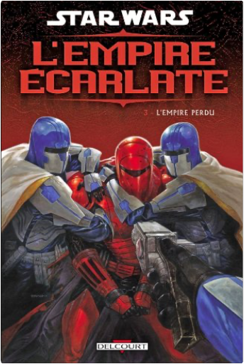

Books
Movies
Albums
Videogames
Games
BD
BD Camille
Blu-ray
Business
Camille
Comics
Cooking
Lego
Manga
Pauline
Photography
Star Wars
T'choupi
Travel
TV Shows
Un livre dont vous êtes le héro
Vinyl
Walt Disney
64
65
66
67
68
star wars - l'empire écarlate, tome 1 : trahison
mike richardson, randy stradley, paul gulacy

star wars - l'empire écarlate, tome 3 - l'empire perdu
mike richardson, randy stradley, paul gulacy
star wars - l'empire écarlate, tome 2 : héritage
Mike Richardson, Randy Stradley, Paul Gulacy
apolline en mer
chris riddell, amélie sarn
Miss Peregrine et les enfants particuliers, tome 1
Ransom Riggs
grammaire de l'anglais
robert, nathan
5
la photo documentaire
stéphanie calabrese roberts
ken games, tome 0 - louviers
robledo, toledano
ken games, tome 1 : pierre
robledo, toledano
4.5
ken games, tome 2 : feuille
robledo, toledano
4.5
ken games, tome 3 : ciseaux
robledo, toledano
la reine des neiges 2 : le roman du film
la bibliothèque rose
64
65
66
67
68


 Made with Delicious Library Made with Delicious Library
Made with Delicious Library Made with Delicious Library